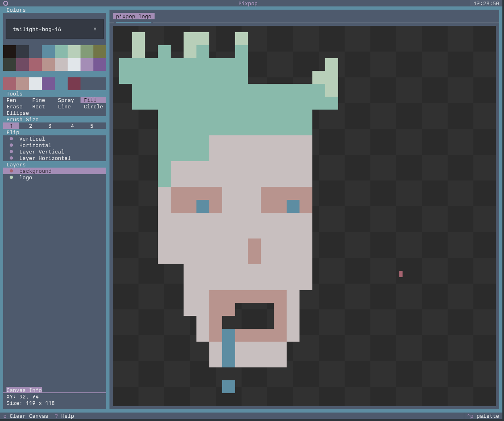

Pixpop¶
A TUI paint application built with the Textual framework.
Pixpop was originally built to export pixel art as ANSI escape sequences, but evolved into a simple multi-layer, multi-canvas pixel drawing app. It pairs well with tools like jestsay for spicing up your terminal MOTD.

Features¶
- Multiple canvases — work on several pieces at once with tabs
- Multiple layers — stack, reorder, hide, and rename layers
- Full mouse and keyboard support — drawing is mouse-only, everything else has a shortcut
- Configuration file — set application defaults via TOML
- Save & export —
.ans,.png, and.pixsession files - Open & load — import
.ans,.png, and.pixfiles - Undo/redo stack — per-tab history
- Built-in help — press ? anywhere for the shortcut reference
Installation¶
Terminal requirements¶
Pixpop needs two environment variables for full color support:
TERMmust be a 256-color variant (e.g.xterm-256color)COLORTERM=truecolorto enable 24-bit true color
Most modern terminals (kitty, alacritty, foot, ghostty, wezterm, GNOME Terminal, Konsole) set these correctly out of the box. If colors look off, check with:
Install¶
Usage¶
- Draw with the mouse (see the caveat below for single-pixel drawing)
- Press ? for the help screen and full keybindings
- Ctrl+S to save, Ctrl+E to export, Ctrl+O to load (
.ans,.png,.pix) - Try
cat-ing your.ansfile back into the terminal
See Getting Started for a full tour.
The half-character caveat¶
Pixpop draws in the terminal using half characters: each terminal cell is two
stacked pixels (▀). The mouse can only report which cell it is over — not
whether it is on the top or bottom pixel of that cell. The
Pen at brush size 1 paints exactly one pixel, and holding
Alt offsets the cursor down one pixel to reach the bottom half of the cell:
- Size 1, click paints the top pixel
- Size 1, Alt + click paints the bottom pixel
Powered by¶
- textual — TUI framework powering the app shell and widgets
- textual-canvas — pixel canvas widget used for drawing
- textual-fspicker — file picker dialogs for save/load flows